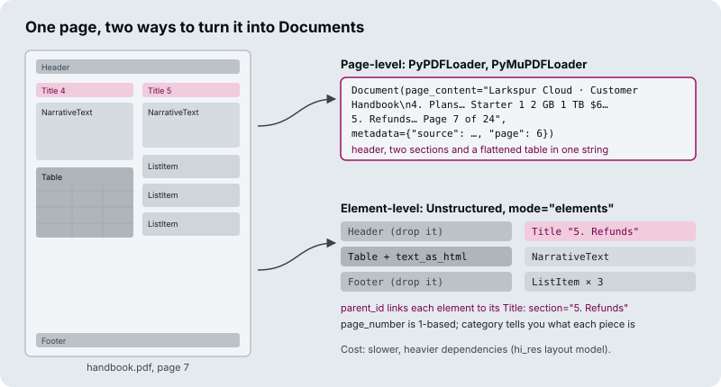

The running example is page 7 of the Larkspur Cloud customer handbook: two columns, a pricing table, a refund section, a header and a footer.
TL;DR
- Every loader returns
Document(page_content, metadata).page_contentis embedded and shown to the model;metadatais never embedded, and it is the only thing you can filter on exactly. - A loader gets bytes from a source; a parser turns those bytes into text and structure. Which parser you choose decides what the index can contain.
- Element-level parsing gives one typed Document per title, paragraph, table or list item, so you can drop boilerplate, keep tables whole and tag every chunk with its section.
- Design the metadata schema for the filters, citations and access rules you will need later. Adding a field after indexing means re-ingesting the corpus, and every loader names its fields differently (
pagecounts from 0 in PyPDF,seq_numfrom 1 in JSONLoader), so map them onto the schema at load time. - Implement
lazy_loadso a large source streams through the pipeline instead of loading into memory at once.
Mental model
- The handbook PDF sits in a folder, a bucket or behind a URL.
- A blob loader reads the raw bytes without interpreting them.
- The bytes travel with their mimetype and source, so any parser can take them.
- The parser turns bytes into text and structure. Layout, tables and headers are kept or lost here.
- Out come Documents: page 7 gives 1 with PyPDF and 10 with Unstructured in element mode.
- Count Documents per source and look for empty or tiny text before anything is embedded.
- The checked Documents go to the splitter in M13.
Loading is lossy. A PDF parser drops layout, an HTML loader drops visual hierarchy, a Word loader drops comments, and a CSV loader drops column types. Know what each loader drops; you cannot retrieve what was never extracted.
Loader vs parser
Lesson 12.1: The Document abstraction and metadata design. Notebooks: 01a_document_loading_and_metadata.ipynb, 01b_document_loaders_overview.ipynb (optional)
People say “loader” for the whole step, but LangChain separates two jobs:
| Loader | Parser | |
|---|---|---|
| Job | Find and fetch the source, yield Documents | Turn raw bytes into text and structure |
| LangChain type | BaseLoader (load, lazy_load) |
BaseBlobParser (lazy_parse(blob)) |
| Examples | PyPDFLoader, DirectoryLoader, WebBaseLoader, your own BaseLoader |
PyPDFParser, PyMuPDFParser, Unstructured’s partition_pdf |
| What it decides | Where documents come from, how many per file | What text is extracted, in what order, with what structure |
Most built-in loaders bundle both: PyPDFLoader fetches the file and runs pypdf on it. GenericLoader keeps them apart (a blob loader plus a parser), which lets one parser read from a folder, a bucket or an API without new code.
When someone says “the PDF loader is bad”, they usually mean the parser extracts the wrong text. Swapping the parser fixes that; changing how files are fetched does not.
flowchart TD
subgraph bundled["Bundled: PyPDFLoader"]
F1[handbook.pdf] --> X1["fetch + pypdf parse"] --> D1[/one Document per page/]
end
subgraph composed["Composed: GenericLoader"]
F2["FileSystemBlobLoader<br/>(or S3, GCS, API)"] --> P2["any BaseBlobParser<br/>PyMuPDFParser, custom"] --> D2[/Documents/]
end
Metadata schema
Metadata answers questions about a chunk that similarity search cannot: where it came from, who may see it, how recent it is, what kind of content it is. The schema has to exist before ingestion, because every field you forget costs a full re-ingest to add.
Plan four kinds of field:
| Kind | Examples | Enables |
|---|---|---|
| Provenance | source, page, row, loader, ingested_at |
Citations, debugging, re-ingesting one file |
| Filtering | doc_type, section, date, language, version |
Narrowing the search before similarity |
| Access control | tenant_id, visibility, owner |
Multi-tenant isolation; never optional |
| Quality | extraction_method, confidence, verified |
Excluding low-quality text, audits |
The M12 lab asks for one shared schema across PDF, DOCX, Markdown, CSV and a web page: source, type, section, page, date. On the handbook page, PyPDF fills three of those directly (source, page, date), and Unstructured fills four (source, type, section via parent_id, page). The rest you derive yourself, for example date from your CMS instead of the file’s modification time.
flowchart LR
Q[/"Question from tenant acme:<br/>latest refund policy"/] --> F["Metadata pre-filter<br/>tenant_id = acme<br/>doc_type = policy<br/>version = latest"]
F --> S["Similarity search<br/>over what is left"]
S --> C["Answer with citation<br/>source + page + section"]
Design against three hard constraints:
- Metadata is not embedded. A title that lives only in metadata never matches a query. If a field should affect similarity, also put it into the text (M16’s contextual chunk headers do this).
- Value types are restricted. Chroma 1.5, the version this course installs, accepts
str,int,float,bool,Noneand non-empty lists of a single one of those types. A nested dict, an empty list or a mixed list such as[1, "x"]fails the write. Flatten before you index. - Filters match exactly.
{"department": "Engineering"}does not match"engineering". Normalise values when you load.
Key Takeaways
- A loader fetches the source and a parser turns bytes into text. When the extracted text is wrong, swap the parser.
- Design the metadata schema before ingestion: provenance, filtering, access control and quality fields. Every forgotten field costs a full re-ingest.
- Metadata is not embedded, accepts only flat value types, and filters match exactly. Put fields that should affect similarity into the text, flatten values and normalise case.
Check yourself
1. A teammate says the PDF loader is bad because the extracted text comes out wrong. Do you change the loader or the parser?
The parser. The loader decides where documents come from and how many there are per file; the parser decides what text is extracted, in what order and with what structure. Changing how files are fetched does not fix wrong text, and GenericLoader lets you swap the parser without touching the fetching.
2. You load the handbook page with PyPDF for the lab's five-field schema. Which fields does it fill, and which must you supply yourself?
PyPDF fills source, page and date, so you supply type and section. Unstructured would fill section through parent_id. Even a filled field can be wrong for your purpose: take date from your CMS rather than the file’s modification time.
3. You store each document's title only in metadata, and questions that name the title never retrieve its chunks. What went wrong?
Metadata is not embedded, so a title that lives only there never matches a query. If a field should affect similarity, also put it into the chunk text, which is what M16’s contextual chunk headers do. Keep it in metadata as well when you want to filter on it.
One record, one Document
Lesson 12.3: Semi-structured sources: CSV rows and JSON / JSONL with jq schemas. Notebooks: 03a_csv_loader.ipynb (optional), 03b_json_loader.ipynb (optional)
A PDF gives you pages and asks what is inside them. A CSV or JSON file already has records, and the loader’s job is to decide which record becomes one Document. That choice sets the smallest thing retrieval can return, the same way element-level parsing does for a PDF (lesson 12.4).
CSVLoader makes one Document per row. Each line of page_content is column: value, and metadata gets the file and the 0-based row number. The handbook’s pricing table, exported as plans.csv, gives three Documents. The Business row:
page_content: 'plan: Business\nvcpu: 4\nmemory_gb: 16\ntraffic_tb: 5\nprice_usd: 48'
metadata: {'source': 'plans.csv', 'row': 1}
UnstructuredCSVLoader goes the other way and returns the whole file as one table Document. Use it when the question is about the table as a whole; use CSVLoader when each row answers a question on its own (“How much memory does Business have?”).
JSONLoader has no fixed record. The jq_schema argument says where one Document starts, and the notebook’s chat_data.json shows how much that decides:
jq_schema |
Documents | Each Document holds |
|---|---|---|
. |
1 | The whole file as JSON text, 1,612 characters |
.messages[] |
11 | One message object as JSON text, keys included |
.messages[].content |
11 | One message’s text; one of them is empty, because a photo message has no content |
The empty Document is the common failure here. A jq path that misses on some records still yields a Document for them, with page_content='', and it gets embedded like any other. Count empty Documents after every load. For JSON Lines files, json_lines=True runs the schema once per line.
Content fields and metadata fields
Every column or key ends up in one of three places: the embedded text, the metadata, or both. Text is what similarity search can match; metadata is what a filter can match exactly (lesson 12.1). Decide per field.
flowchart LR
R[/"plans.csv row 1"/] --> C["content_columns<br/>plan, vcpu, memory_gb"]
R --> M["metadata_columns<br/>plan, price_usd"]
C --> T["page_content<br/>embedded"]
M --> F["metadata<br/>filters, citations"]
CSVLoader takes content_columns, metadata_columns and source_column, and its defaults hold three traps. All three show up when you run it on plans.csv:
metadata_columnsalone removes those columns from the text. Withmetadata_columns=["plan", "price_usd"]and nocontent_columns, the Business Document’s text becomesvcpu: 4\nmemory_gb: 16\ntraffic_tb: 5. The word “Business” is gone from what gets embedded, so a question about the Business plan can no longer match it. Listplanincontent_columnsas well to keep it in both places.- Every value stays a string. The metadata reads
'price_usd': '48'. A range filter such as “plans under $50” compares numbers, so cast the value tointwhen you load. source_columnreplacessource. Withsource_column="plan"the metadata says'source': 'Business', and nothing records which file the row came from. Keep the file path in a separate field if you use it.
One more from the notebook: passing csv_args={"fieldnames": [...]} to rename columns on a file that already has a header row turns that header into a Document. The notebook’s five-row data.csv loads as six Documents, and the first one reads Property ID: Property_ID, Address: Address. Rename the columns in the file instead, or drop that first Document.
JSONLoader splits the same decision across two arguments. content_key names the field that becomes page_content, and metadata_func(record, metadata) copies the fields you want to filter on. The notebook copies sender_name and timestamp_ms, so a query can ask for one person’s messages in a time range. The loader adds source as an absolute path and seq_num counting from 1, while CSVLoader writes source as you passed it and counts row from 0. Lesson 12.5 maps these differences onto one schema.
Key Takeaways
- For CSV and JSON, decide which record becomes one Document:
CSVLoadergives one per row, andjq_schemasets the record forJSONLoader. Count empty Documents after every load. - Decide per field whether it goes in the embedded text, the metadata or both. A column listed only in
metadata_columnsdisappears from the text. - Loader metadata values arrive as strings and
source_columnoverwrites the file path. Cast numbers and keep the file path in its own field.
Check yourself
1. What does the jq schema passed to JSONLoader decide, and why does it matter for retrieval?
It decides where one Document starts, and so the smallest thing retrieval can return. On chat_data.json, . gives one Document of 1,612 characters, while .messages[] gives 11, one per message. A path that misses on some records still yields an empty Document, so count empty Documents after every load.
2. You load plans.csv with metadata columns set to plan and price and no content columns. What text gets embedded for the Business row, and what breaks?
The text becomes vcpu: 4\nmemory_gb: 16\ntraffic_tb: 5, because metadata_columns alone removes those columns from the text. The word “Business” is gone from the embedding, so a question about the Business plan cannot match it. List plan in content_columns too, and cast price_usd to int, since it stays the string '48'.
3. A five-row CSV loads as six Documents, and the first one reads Property ID: Property_ID. What caused it?
The loader was given csv_args={"fieldnames": [...]} to rename columns on a file that already has a header row, so the header was read as a data row. Rename the columns in the file instead, or drop that first Document.
Element-level parsing
Lesson 12.4: PDF and Word: parser comparison and element-level parsing. Notebooks: 04a_pdf_loader.ipynb, 04b_ms_word_loader.ipynb (optional)
A page-level parser returns the page as one string. An element-level parser (Unstructured with mode="elements") returns one Document per layout element, each with a category such as Title, NarrativeText, Table, ListItem, Header or Footer.

What the three PDF loaders in lesson 12.4 produce from the handbook page:
PyPDFLoader |
PyMuPDFLoader |
UnstructuredPDFLoader, mode="elements", hi_res |
|
|---|---|---|---|
| Documents from the page | 1 | 1 | 10 |
| Header and footer | Inside the text | Inside the text | Separate elements you can drop |
| Pricing table | Rows of space-separated values | One cell per line | Table element with text_as_html |
| Section of each piece | Unknown | Unknown | parent_id points to its Title |
| Page number | page (0-based) |
page (0-based) |
page_number (1-based) |
| Speed and dependencies | Fast, pure Python | Fastest; AGPL licence | Slowest; layout models and system packages |
Three consequences for retrieval:
- Boilerplate pollutes embeddings. If every chunk starts with “Larkspur Cloud · Customer Handbook”, every chunk shares that text, and similarity between chunks from different pages rises. Drop
HeaderandFooterelements, or strip repeated lines from page-level text. - Flattened tables lose their meaning. “Business 4 16 GB 5 TB $48” can be read, but once a splitter cuts it, “16 GB” no longer has a column name. Keep a table as one chunk and give the model its HTML or Markdown form.
- Granularity is decided at load time. One Document per file, page, row or element sets the smallest thing retrieval can return, and changing it later means re-ingesting.
The interactive lab puts the handbook page through all three loaders. Hover a Document to see which part of the page it came from, and read how many of the five schema fields each loader fills: three for PyPDF and PyMuPDF, four for Unstructured.
Element-level parsing costs time and dependencies, so use it where layout carries meaning: reports, manuals, forms, anything with tables. Plain prose PDFs do fine with PyPDF or PyMuPDF.
Word and Markdown files have the same switch. In this lesson’s Word notebook, UnstructuredWordDocumentLoader returns the file as one Document by default; with mode="elements" and chunking_strategy="by_title" it returns pieces of at most 3,000 characters and starts a new one at every heading. Lesson 12.2 does the same for Markdown with UnstructuredMarkdownLoader: mode="single" gives one Document, mode="elements" one per heading, paragraph or list item, each with a category.
Key Takeaways
- Element-level parsing returns one Document per layout element with a
category, so headers and footers can be dropped and each piece knows its section. - Drop repeated boilerplate before embedding, and keep each table as one chunk in HTML or Markdown form so values keep their column names.
- Granularity is fixed at load time. Use element-level parsing for reports, manuals, forms and tables; plain prose PDFs do fine with PyPDF or PyMuPDF.
Check yourself
1. Why does leaving the handbook's page header in every chunk hurt retrieval?
If every chunk starts with “Larkspur Cloud · Customer Handbook”, every chunk shares that text, and similarity between chunks from different pages rises. An element-level parser returns Header and Footer as separate elements you can drop; with page-level text, strip the repeated lines instead.
2. The pricing table was loaded with PyPDFLoader and then split. Why can a question about which plan has 16 GB of memory fail, and what would Unstructured give instead?
PyPDF flattens the table into rows of space-separated values, and once a splitter cuts a row, “16 GB” no longer has a column name. UnstructuredPDFLoader with mode="elements" and hi_res returns the table as one Table element with text_as_html. Keep it as one chunk and give the model its HTML or Markdown form.
3. Your corpus is plain prose PDFs with no tables or forms. Should you switch everything to element-level parsing?
No. Element-level parsing is the slowest option and needs layout models and system packages, and plain prose PDFs do fine with PyPDF or PyMuPDF. Use it where layout carries meaning: reports, manuals, forms, anything with tables. Choose before you ingest, because changing granularity later means re-ingesting.
Routing a mixed folder
Lesson 12.5: Web, YouTube and arXiv sources; bulk directory loading. Notebooks: 05a_url_loader.ipynb, 05b_youtube_transcript_loader.ipynb (optional), 05c_research_paper_loader.ipynb (optional), 05d_directory_loader.ipynb (optional)
The M12 lab asks for a mixed folder: the handbook as PDF, the onboarding guide as DOCX, release notes in Markdown, plans.csv and the status page from the web. DirectoryLoader loads a folder with one loader class per file type. The directory notebook builds one DirectoryLoader per extension, each with its own glob, loader_cls and loader_kwargs, because the default loader_cls is UnstructuredFileLoader for everything.
Two defaults matter on a real folder:
silent_errors=Falsestops the whole run at the first file that fails to parse. Set it toTruefor a nightly job, and then compare the number of files with the number of distinctsourcevalues, because a skipped file only shows up in the log.show_progressanduse_multithreadingare off. Turn them on for folders of thousands of files;max_concurrencydefaults to 4.
Loading the folder is the easy half. Each loader writes its own metadata, with its own key names and counting rules. This is what each one sets, in langchain-community 0.4.2, run on files in this repo’s data/sample/ (the last three read from the loader source, since they need the network):
| Loader | One Document per | Metadata it sets |
|---|---|---|
TextLoader, Docx2txtLoader |
file | source |
PyPDFLoader |
page | source, page (0-based), page_label, total_pages, producer, creator, creationdate, moddate |
PyMuPDFLoader |
page | source, page (0-based), total_pages, producer, creationdate, moddate, plus file_path, format, title, author and the dates again in PDF format (creationDate, modDate); no page_label |
CSVLoader |
row | source as you passed it, row (0-based) |
JSONLoader |
jq match | source as an absolute path, seq_num (1-based) |
RecursiveUrlLoader |
page crawled | source (the URL), content_type, title, description, language |
YoutubeLoader |
video, or time window | source (the video id); with chunks also start_seconds, start_timestamp |
ArxivLoader |
paper | Published, Title, Authors, Summary; no source at all |
None of these fill the lab’s five fields (source, type, section, page, date) the same way. Map each loader’s output onto the schema in one function, right after loading and before splitting, so every later stage sees one shape:
def to_schema(doc, kind):
m = doc.metadata
page = m.get("page")
fields = {
"source": m.get("source") or m.get("entry_id"), # arXiv: load_all_available_meta=True
"type": kind, # set by the route, not guessed
"page": page + 1 if page is not None else m.get("page_number"),
"date": m.get("creationdate") or m.get("Published"),
}
doc.metadata = {k: v for k, v in fields.items() if v is not None}
return doc
The function chooses one meaning per field: page is always 1-based, date is always ISO, and source is always something a reader can open. It drops the fields a loader did not set instead of storing None, so a filter on page only ever meets numbers. section is missing on purpose: only an element-level parser can fill it (lesson 12.4), so add it on the routes that use one.
Web pages, transcripts and papers
Remote sources fail more quietly than files, because the loader returns whatever the server sent.
Web pages. RecursiveUrlLoader crawls from a root URL to max_depth=2 by default and stays under that root (prevent_outside=True). Without an extractor, page_content is the raw HTML, so tags, scripts and navigation menus get embedded; the URL notebook passes a BeautifulSoup bs4_extractor to keep only the text. Two more defaults to change:
check_response_status=Falsekeeps error responses. A 404 page becomes a Document holding the error page’s text, and it gets indexed. Set it toTrue.- The loader fetches HTML and does not run JavaScript. A page that renders its content in the browser comes back as an empty shell. Flag Documents whose text is much shorter than the HTML they came from.
YouTube transcripts. By default YoutubeLoader returns one Document per video with the video id as source. With transcript_format=TranscriptFormat.CHUNKS it returns one Document per chunk_size_seconds window (120 by default; the notebook uses 10 and 15), and each source becomes the video URL with &t=<seconds>s, so a citation opens the video at that moment. add_video_info=True adds title and author but needs another network call, which is where the notebook’s SSL errors come from.
arXiv papers. ArxivLoader downloads each matching PDF, reads it with PyMuPDF, and joins every page into one Document. The page numbers are lost, so a citation can name the paper but not the page. Published holds the date of the latest version, not the first submission. load_max_docs defaults to 100, and get_summaries_as_docs() returns only the abstracts, which is often enough for a “find me papers about X” index and far cheaper to embed.
Key Takeaways
- Route each file type in a mixed folder to its own loader. With
silent_errors=True, compare the file count with the distinctsourcevalues to catch skipped files. - Every loader writes different metadata keys and counting rules. Map them onto one schema right after loading, and drop unset fields instead of storing
None. - Remote sources fail quietly. Pass an extractor for web pages, set
check_response_status=True, and flag pages whose text is much shorter than their HTML.
Check yourself
1. Why map every loader's metadata onto one schema right after loading, before splitting?
Each loader writes its own keys with its own counting rules: PyPDFLoader counts page from 0, CSVLoader counts row from 0, JSONLoader counts seq_num from 1, and ArxivLoader sets no source. One mapping function gives every later stage one shape, with page always 1-based, date always ISO and source always something a reader can open. Dropping unset fields instead of storing None means a filter on page only ever meets numbers.
2. A nightly DirectoryLoader job runs with silent errors turned on and reports success. How do you check that no file was skipped?
Compare the number of files in the folder with the number of distinct source values in the loaded Documents. With silent_errors=True a file that fails to parse only shows up in the log. With the default False, the whole run stops at the first failure instead.
3. A web crawl indexes a 404 error page, and a page that renders in the browser comes back almost empty. What causes each?
RecursiveUrlLoader defaults to check_response_status=False, so error responses become Documents and get indexed; set it to True. The loader fetches HTML and does not run JavaScript, so a browser-rendered page comes back as an empty shell. Flag Documents whose text is much shorter than the HTML they came from.
Lazy loading
Lesson 12.6: Custom loaders with lazy loading. Notebooks: 06a_custom_loader.ipynb
load() returns a list, so the whole corpus sits in memory before anything else runs. lazy_load() is a generator: it yields one Document at a time, and the pipeline can split, embed and upsert in batches while the loader keeps reading.
from collections.abc import Iterator
from langchain_core.document_loaders import BaseLoader
from langchain_core.documents import Document
class TicketLoader(BaseLoader):
def __init__(self, api, since):
self.api, self.since = api, since
def lazy_load(self) -> Iterator[Document]:
for page in self.api.tickets(since=self.since): # paginated API
for t in page:
yield Document(
page_content=t["body"],
metadata={"source": f"ticket:{t['id']}", "type": "ticket",
"date": t["updated_at"], "tenant_id": t["org"]},
)
BaseLoader derives load() from lazy_load(), so implementing the generator gives you both.
- The indexer calls
next()on the loader. lazy_load()reads one ticket from the API and yields it as a Document.- The indexer splits it and adds the chunks to the current batch.
- When the batch is full, it is embedded and written to the index in one call.
- The index returns the stored ids, and the indexer records the last one as its checkpoint.
- The loop runs until the source is exhausted, so memory never holds more than one batch.
Lazy loading keeps memory flat for a million-record source, and the first vectors reach the index while the loader is still reading. A failure part-way through only loses the current batch, as long as you record a checkpoint (the last id or updated_at written).
Key Takeaways
load()holds the whole corpus in memory as a list, whilelazy_load()yields one Document at a time so splitting and upserting run in batches alongside reading.- Implement
lazy_load()in a customBaseLoader;load()comes free from it. - Record a checkpoint, such as the last id or
updated_atwritten, so a crash loses only the current batch and the next run can resume from there.
Check yourself
1. With lazy loading, why do the first vectors reach the index before the loader has finished reading the source?
lazy_load() is a generator that yields one Document at a time. The indexer splits each one, adds it to a batch, and sends each batch of 100 chunks to be embedded and upserted while the loader keeps reading. With load(), nothing else runs until the whole corpus sits in memory as a list.
2. The TicketLoader ingests a million tickets and crashes part-way through. How much work is lost, and what lets you resume?
Only the current batch, as long as you record a checkpoint: the last id or updated_at written. The loader takes a since argument and passes it to the paginated API, so a restart can begin from the checkpoint instead of the first ticket.
3. A teammate writes a custom loader that overrides load and builds a list of every record. Which method should they implement instead?
lazy_load(), as a generator. BaseLoader derives load() from lazy_load(), so the generator gives them both methods. A list keeps the whole corpus in memory, which a million-record source cannot afford, and nothing reaches the index until it is complete.
Interactive lab
One PDF page, three parsers: open the file in a browser. Switch between PyPDFLoader, PyMuPDFLoader and UnstructuredPDFLoader, hover each output Document to see which part of the page it came from, and compare how many schema fields each loader fills.
How it connects
- Before: M11 puts Load first in the lifecycle and gives you the baseline to measure against.
- Next: M13 splits these Documents into chunks; structure-aware splitting works best when the parser kept the structure. M15 uses the metadata for filtered search, and M16 copies section titles into chunk text.
Interview Spotlight: 5 Questions You Might Get Asked
Production questions in the style of OpenAI, Anthropic and Google interviews for applied AI roles.
1. A customer uploads 4,000 product manuals as PDFs: two-column layouts, spec tables, scanned appendices. You have a week to make them searchable. How do you choose a parsing approach?
What a strong answer covers:
- Samples 20 to 30 pages of each layout type and compares parser output side by side before choosing
- Uses element-level parsing (or a layout model) for tables and multi-column pages, and a fast text parser for plain prose; routes by document type
- Detects scanned pages (empty or near-empty text layer) and sends only those to OCR
- Sets acceptance checks: no empty Documents, tables kept whole, page numbers that match the printed page
2. Users report that the assistant cites “page 6” when the answer is on page 7. What happened, and how do you fix it for existing data?
What a strong answer covers:
- PyPDF and PyMuPDF
pagemetadata is 0-based; the citation code shows it raw - Fixes it at the presentation layer at once (
page + 1, or preferpage_label), so no re-index is needed - Normalises to one 1-based
pagefield in the schema for future ingests, and documents it - Adds a citation test to the golden set: question, expected source and expected page
3. You run a multi-tenant RAG product. Should tenant isolation be a metadata filter in one shared index, or one index per tenant?
What a strong answer covers:
- A shared index with a
tenant_idfilter is cheaper to run but depends on every query path applying the filter - Per-tenant indexes (or namespaces) make cross-tenant leaks structurally impossible and simplify deletion, at operational cost
- Whatever the choice, the filter comes from the authenticated session, never from the user’s text or the model
- Tests for leaks with canary documents and a cross-tenant query suite on every release
4. Ingestion runs nightly over a document store. How do you know it is silently degrading?
What a strong answer covers:
- Tracks per-run counts by source and type: files seen, Documents produced, empty or tiny Documents, parse errors
- Alerts on distribution shifts, such as average characters per page dropping (a new scanned batch) or a type disappearing
- Remembers that many loaders fail quietly (
silent_errors=True, empty text from scans, JS-rendered pages) and checks their output explicitly - Samples parsed Documents for human or LLM review, and re-runs the golden set after big ingests
5. Your custom loader pulls 2 million support tickets from an API. It crashes at 1.4 million with an out-of-memory error. What changes?
What a strong answer covers:
- Implements
lazy_loadas a generator and calls it from the indexer instead ofload() - Splits, embeds and upserts in fixed-size batches so memory stays flat
- Checkpoints the last
updated_ator id written, so a restart resumes instead of starting over - Makes upserts idempotent with stable ids (
ticket:{id}), so a retried batch does not create duplicates
Key Takeaways
page_contentis what gets embedded;metadatais what you filter and cite by, and it is never embedded.- Choose the parser by what the documents contain. Element-level parsing keeps structure and costs speed.
- Write the metadata schema down before the first ingest, including access control, and normalise values at load time.
- Stream with
lazy_load, batch the downstream work, and validate counts after every run.